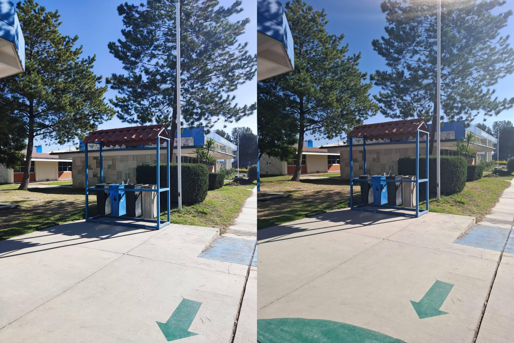
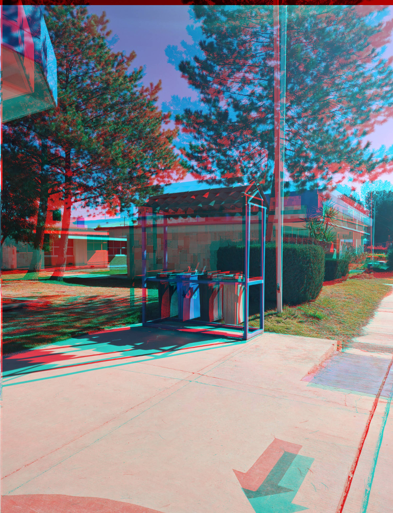
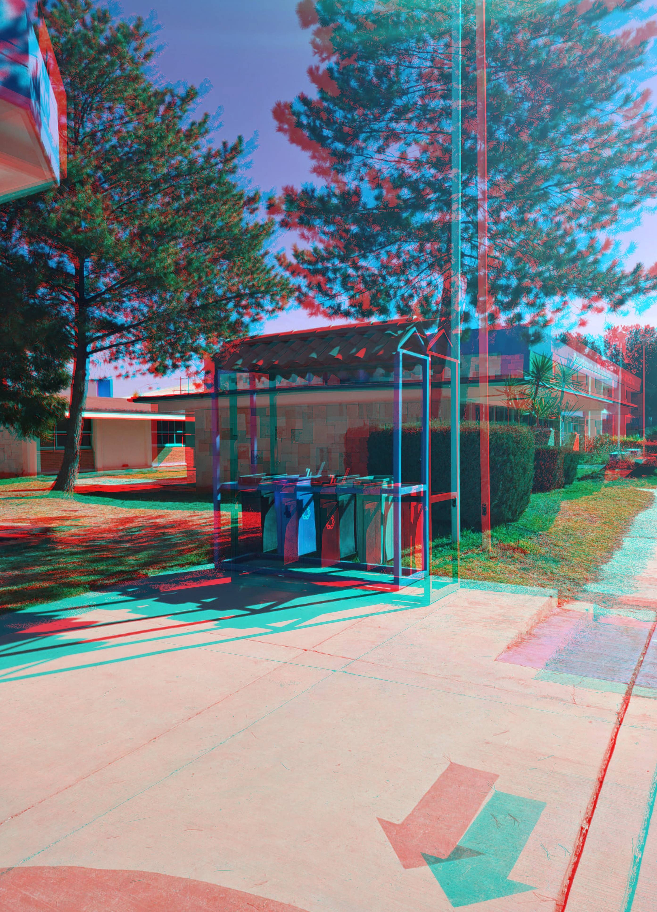

Bienvenido a la Galería de Imágenes Anaglifo de Objetos

Imagen de referencia para crear este anaglifo

Objeto cercano
Esta imagen tiene como objeto de enfoque las flechas de dirección.

Objeto medio
Esta imagen tiene como objeto de enfoque los botes de basura.

Objeto lejano
Esta imagen tiene como objeto de enfoque el tinaco de al fondo.